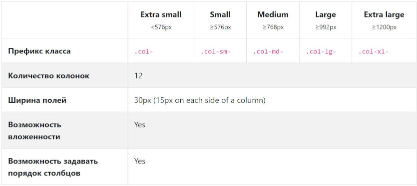
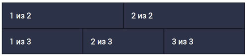

Bootstrap неплохо зарекомендовал себя как удобный, расширяемый CSS каркас для быстрого создания адаптивных макетов. Миллионы сайтов успешно используют этот фреймворк в средних, малых и крупных проектах. Bootstrap важен тем, что имеет поддержку всех современных браузеров и дает более удобную, управляемую и гибкую систему для разработчиков, нежели классическая модель разметки без использования фреймворка.

Дополнительные материалы урока Bootstrap
- Все примеры урока вы можете потестировать самостоятельно: Скачать
- Ознакомиться с документацией Bootstrap можно на сайте Bootstrap
- Последняя версия стартера с Bootstrap: OptimizedHTML 5
Сегодня мы подробно разберем работу с сеткой Bootstrap, по ходу дела сравнивая ее со старой версией. Данный урок будет полезен вам не только если вы новичок и знакомитесь с Bootstrap, но и в том случае, если вы опытный разработчик и хотите изучить все правила и нюансы верстки с использованием сетки Bootstrap и Flexbox инструментов, входящих в ее состав.
1. Основные параметры сетки по умолчанию
По умолчанию сетка Bootstrap очень похожа на сетку третьей версии, однако появились некоторые важные отличия.
Из таблицы основных опций мы можем заметить явные отличия от сетки третьей версии. Теперь отсутствует префикс класса «.col-xs-», отвечающий за самые маленькие разрешения, вместо него указывается упрощенный префикс «.col-». Можно ошибочно подумать, что префикс «.col-» отвечает за минимальные разрешения мобильных устройств, однако это не совсем так. Помимо всего прочего, префикс «.col-» - это одно из важнейших новшеств Bootstrap. Это класс, который отвечает за автоматическую разметку колонок на любом разрешении. Но об этом позже.
За малые разрешения (small) отвечает префикс «.col-sm-» с медиа-запросом от 576 пикс. Ширина контейнера составляет 540 пикс. Средние разрешения отрабатываются от 768 пикс. Ширина контейнера - 720 пикс. Большие разрешения работают с разрешения устройств от 992 пикс. Ширина контейнера - 960 пикс. И самые большие - от 1200 пикс. Ширина контейнера фиксируется на значении 1140 пикс.
Обратите внимание, что максимальные значения медиа-запросов имеют неточные значения с дробной частью «.98» в пикселях. Это заметно при выборе Desktop First метода верстки, где максимальная ширина медиа-запроса ограничена. Например, при компиляции Sass «+media-breakpoint-down(lg)» мы получим «@media (max-width: 1199.98px)». Здесь 0.02 пикселя освобождаются для старта следующего медиа-запроса. Имейте это ввиду. В следующих выпусках «Джедай верстки 8» мы рассмотрим этот и множество других моментов из этого урока на реальном примере.
2. Автоматическая разметка колонок
2.1 Колонки одинаковой ширины
С помощью нового универсального класса «.col» можно указать до 12 колонок в ряду (родитель «.row»), ширина которых будет автоматически вычислена в зависимости от количества элементов и будет равна.
Например:
2.2 Установка ширины одной колонки
Вы также можете явно установить ширину одной колонки, а остальные оставить автоматическими.
<div class="row">
<div class="col">1 из 3</div>
<div class="col-6">2 из 3 (широкое)</div>
<div class="col">3 из 3</div>
</div>
<div class="row">
<div class="col">1 из 3</div>
<div class="col-5">2 из 3 (широкое)</div>
<div class="col">3 из 3</div>
</div>
В данном примере второй элемент в третьем ряду имеет класс «.col-6» и второй элемент во втором ряду имеет класс «.col-5», которые занимают соответствующее количество колонок на всех разрешениях экрана. Ширина остальных колонок является отзывчивой и вычисляется автоматически, занимая все оставшееся пространство.
2.3 Контент переменной ширины
Можно использовать класс «col-{breakpoint}-auto», чтобы определить контент с переменной шириной, в зависимости от занимаемого пространства содержимым колонки. Где breakpoint - размер экрана (xl, lg, md или sm).
<div class="row justify-content-sm-center">
<div class="col col-md-2">1 из 3</div>
<div class="col-sm-auto">Контент переменной ширины</div>
<div class="col col-md-2">3 из 3</div>
</div>
<div class="row">
<div class="col">1 из 3</div>
<div class="col-sm-auto">Контент переменной ширины номер два</div>
<div class="col col-md-2">3 из 3</div>
</div>
Здесь мы видим, что две центральные колонки занимают ширину, соответствующую ширине содержимого, однако в первом ряду благодаря классу «.justify-content-sm-center» у «.row» весь ряд центрируется и общая ширина зависит только от ширины центральной колонки, в то время, как второй ряд растягивается на всю доступную ширину, но вторая колонка остается фиксированной по ширине содержимого.
2.4 Мульти-ряд
Благодаря Bootstrap вы можете сделать в одном ряду несколько строк (переносов). Реализовать это можно с помощью класса «.w-100», который очень похож на тег «br» и по-сути просто делает перенос колонок на новую строку.
<div class="row">
<div class="col">col</div>
<div class="col">col</div>
<div class="w-100"></div>
<div class="col">col</div>
<div class="col">col</div>
<div class="col">col</div>
</div>
Обратите внимание, что данный класс является частью дополнительных возможностей Bootstrap, которые подключаются к проекту отдельно в случае использования Sass версии проекта Bootstrap и находятся в папке «scss/utilities». Вы также можете подключить другие плагины из этой папки к вашему проекту по необходимости.
3. Адаптивные классы
3.1 Брейкпоинты
Очень интересная возможность Bootstrap - возможность задавать универсальные колонки, которые будут отображаться на всех разрешениях. Это упомянутый ранее класс «.col». Кроме того, можно определить класс, указывающий конкретное количество колонок, занимаемое содержимым - это классы с префиксом «.col-{число колонок}», например «.col-6» говорит нам о том, что содержимое займет 6 колонок из 12. В случае, когда конкретное количество задавать не обязательно, можно смело использовать универсальный класс «.col».
<div class="row">
<div class="col">col</div>
<div class="col">col</div>
<div class="col">col</div>
<div class="col">col</div>
</div>
<div class="row">
<div class="col-8">col-8</div>
<div class="col-4">col-4</div>
</div>
3.2 На мобильных устройствах
Вы можете использовать префикс класса «.col-sm-{количество занимаемых колонок}» для того, чтобы задать базовую сетку на всех разрешениях, кроме самых маленьких. На небольших экранах колонки такой сетки будут складываться друг под друга. На разрешениях больше - будут занимать столько места, сколько вы определили в классах.
<div class="row">
<div class="col-sm-8">col-sm-8</div>
<div class="col-sm-4">col-sm-4</div>
</div>
<div class="row">
<div class="col-sm">col-sm</div>
<div class="col-sm">col-sm</div>
<div class="col-sm">col-sm</div>
</div>
Здесь мы видим, что первый ряд на устройствах с разрешением более «sm», то-есть больше, чем 576 пикс. разбивается на 2 колонки - шириной 8 и 4 из 12-ти соответственно. Ширина колонок во втором ряду вычисляется автоматически, но на самых малых разрешениях эти колонки также складываются друг под друга, благодаря классу «.col-sm».
3.3 Создание сложной комбинированной сетки
С помощью Bootstrap вы можете создавать любые комбинации колонок при создании сетки. Для каждой колонки можно задать любое поведение на различных разрешениях с помощью адаптивных классов. Здесь отличия от третьей версии - только в наименованиях классов.
<!-- На мобильных устройствах: Первая колонка - на полную ширину, вторая на половину -->
<div class="row">
<div class="col-12 col-md-8">.col-12 .col-md-8</div>
<div class="col-6 col-md-4">.col-6 .col-md-4</div>
</div>
<!-- На десктопе: 3 колонки по 4 в каждой. На мобильных: все колонки вполовину контейнера -->
<div class="row">
<div class="col-6 col-md-4">.col-6 .col-md-4</div>
<div class="col-6 col-md-4">.col-6 .col-md-4</div>
<div class="col-6 col-md-4">.col-6 .col-md-4</div>
</div>
<!-- Колонки занимают 6 из 12 колонок на любом разрешении -->
<div class="row">
<div class="col-6">.col-6</div>
<div class="col-6">.col-6</div>
</div>
4. Выравнивание
Bootstrap основан на «флексах» и дарит нам все возможности данной модели, которые доступны в простых готовых классах. В числе возможностей - вертикальное и горизонтальное выравнивание.
4.1 Вертикальное выравнивание
<div class="row align-items-start">
<div class="col">Верх</div>
<div class="col">Верх</div>
<div class="col">Верх</div>
</div>
<div class="row align-items-center">
<div class="col">Середина</div>
<div class="col">Середина</div>
<div class="col">Середина</div>
</div>
<div class="row align-items-end">
<div class="col">Низ</div>
<div class="col">Низ</div>
<div class="col">Низ</div>
</div>
Помимо управления выравниванием через родительский «.row», можно выравнивать колонки, задавая им соответствующие классы:
<div class="row">
<div class="col align-self-start">Верх</div>
<div class="col align-self-center">Середина</div>
<div class="col align-self-end">Низ</div>
</div>
4.2 Горизонтальное выравнивание
Кроме того, Bootstrap имеет в своем арсенале инструменты для горизонтального выравнивания колонок при помощи префикса «.justify-content-» у «.row».
<div class="row justify-content-start">
<div class="col-4">row justify-content-start</div>
<div class="col-4">row justify-content-start</div>
</div>
<div class="row justify-content-center">
<div class="col-4">row justify-content-center</div>
<div class="col-4">row justify-content-center</div>
</div>
<div class="row justify-content-end">
<div class="col-4">justify-content-end</div>
<div class="col-4">justify-content-end</div>
</div>
<div class="row justify-content-around">
<div class="col-4">justify-content-around</div>
<div class="col-4">justify-content-around</div>
</div>
<div class="row justify-content-between">
<div class="col-4">justify-content-between</div>
<div class="col-4">justify-content-between</div>
</div>
4.3 Удаление полей между колонками
Очень часто встречаются ситуации, когда необходимо убрать поля между колонками. Например, если вы создаете галерею и элементы должны быть расположены вплотную, например так:
Для этого достаточно у элемента «.row» задать дополнительный класс «.no-gutters».
<div class="row no-gutters">
<div class="col-6 col-sm-4 col-md-4"><div>col-6 col-sm-4 col-md-4</div></div>
<div class="col-6 col-sm-4 col-md-4"><div>col-6 col-sm-4 col-md-4</div></div>
<div class="col-6 col-sm-4 col-md-4"><div>col-6 col-sm-4 col-md-4</div></div>
<div class="col-6 col-sm-4 col-md-4"><div>col-6 col-sm-4 col-md-4</div></div>
<div class="col-6 col-sm-4 col-md-4"><div>col-6 col-sm-4 col-md-4</div></div>
<div class="col-6 col-sm-4 col-md-4"><div>col-6 col-sm-4 col-md-4</div></div>
<div class="col-6 col-sm-4 col-md-4"><div>col-6 col-sm-4 col-md-4</div></div>
<div class="col-6 col-sm-4 col-md-4"><div>col-6 col-sm-4 col-md-4</div></div>
<div class="col-6 col-sm-4 col-md-4"><div>col-6 col-sm-4 col-md-4</div></div>
</div>
4.4 Перенос колонок на новую строку
Если ряд (.row) заполняется суммарным количеством колонок более 12-ти, последующая колонка переносится на новую строку.
<div class="row">
<div class="col-9">.col-9</div>
<div class="col-4">.col-4<br>9 + 4 = 13 колонок - это больше 12. Данный элемент шириной в 4 колонки будет перенесен на новую строку.</div>
<div class="col-6">.col-6<br>Следующие колонки расположатся вдоль строки.</div>
</div>
Здесь все также, как в 3-й версии Bootstrap.
5. Порядок элементов
5.1 Классы порядка элементов
Можно использовать специальные классы с префиксом «.order-» для определения порядка элементов. Если вы знакомы с Flex-версткой, данные правила будут вам знакомы. Bootstrap дает возможность задавать порядок элементов с помощью классов. Можно задавать порядок напрямую (.order-1.order-md-2):
<div class="row">
<div class="col">Первый неупорядоченный элемент</div>
<div class="col order-12">Второй, упорядоченный как последний</div>
<div class="col order-1">Третий, упорядоченный как первый</div>
</div>
Или можно использовать специальные классы, которые определяют порядок первого и последнего элементов (.order-first, .order-last):
<div class="row">
<div class="col">Первый неупорядоченный</div>
<div class="col order-last">Второй, упорядоченный как последний</div>
<div class="col order-first">Третий, упорядоченный как первый</div>
</div>
5.2 Смещение колонок
По аналогии с Bootstrap 3, в 4-й версии также есть возможность горизонтального смещения колонок, однако реализовано это несколько иначе и для этого есть специальные классы с префиксом «.offset-».
5.2.1 Классы смещения
Сдвигать колонку вправо можно, используя классы «.offset-md-*», которые увеличивают левый отступ на * количество элементов. Из примера ниже, класс «.offset-md-2» сдвинет колонку «.col-md-4» на 2 колонки вправо, остальные примеры работают по аналогии:
<div class="row">
<div class="col-md-4">.col-md-4</div>
<div class="col-md-4 offset-md-4">.col-md-4 .offset-md-4</div>
</div>
<div class="row">
<div class="col-md-3 offset-md-3">.col-md-3 .offset-md-3</div>
<div class="col-md-3 offset-md-3">.col-md-3 .offset-md-3</div>
</div>
<div class="row">
<div class="col-md-6 offset-md-3">.col-md-6 .offset-md-3</div>
</div>
Можно сбрасывать отступ на всех разрешениях благодаря классу «.offset-*-0», где * - это sm, md, lg или xl.
6. Вложенность
Весьма ожидаемо, что Bootstrap поддерживает вложенность элементов. Работает здесь все также, как в третьей версии - чтобы вложить колонки в другие, необходимо создать дочерний класс «.row» и уже в него вкладывать колонки.
<div class="row">
<div class="col-sm-9">Уровень 1: «.col-sm-9»
<div class="row">
<div class="col-8 col-sm-6">Уровень 2: «.col-8 .col-sm-6»</div>
<div class="col-4 col-sm-6">Уровень 2: «.col-4 .col-sm-6»</div>
</div>
</div>
</div>
Мы рассмотрели основные особенности работы с сеткой Bootstrap. Если у вас есть желание более подробно ознакомиться со всеми возможностями фреймворка, рекомендую изучить документацию на официальном сайте.
В следующем уроке мы рассмотрим настройку Bootstrap сетки под ваш конкретный проект на примере использования в стартовом шаблоне OptimizedHTML 4. А именно настройку, работу с переменными отступов, брейкпоинтов, количества колонок и прочего.
Премиум уроки от WebDesign Master


Другие уроки по теме «Веб-разработка»
- Создание красивого аккордеона с плавной анимацией переключения. Материалы урока
- Создание адаптивных плиток Masonry на чистом CSS. Материалы урока
- Создание красивого сайта с Parallax эффектом при движении мыши. Материалы урока
- Создание красивого сайта с Parallax эффектом и анимацией заголовка. Материалы урока
- Создание красивой галереи на сайте. Материалы урока
- Создание сайта с красивой анимацией фона. Материалы урока